ANEXO DEL REPORTE TÉCNICO: PRÁCTICAS 3.1 A 3.6 PROYECTO "LA TORRE" EN AWS
PROFESOR: JOEL MONICO SANCHEZ VELASCO
ALUMNO: CARLOS ALEJANDRO VIZCAINO ANGUIANO
16/11/2026
1. Introducción
En esta unidad el material de estudio explica cómo se monta la infraestructura de un videojuego en línea en la nube, usando como
ejemplo un shooter llamado Nebula Arena. En lugar de seguir el ejemplo tal cual, decidí aplicar las seis prácticas a un juego propio
que desarrollé para este proyecto, La Torre, y montarlo en Amazon Web Services (región us-east-2, Ohio). El trabajo fue individual.
La Torre es un roguelike en el que un grupo de hasta tres jugadores sube una torre de cuatro pisos y en cada piso pelea contra un jefe.
Al vencer a cada jefe, cada jugador escoge una mejora antes de seguir subiendo. Hay cuatro clases (caballero, bárbaro, cazadora y
hechicero) y tres modos: solitario, solo con dos compañeros controlados por IA, y multijugador de hasta tres personas en red local.
El servidor es autoritativo, es decir, el cliente solo manda las acciones del jugador y el servidor es el que decide qué pasa y envía
el estado del juego a todos. El cliente es una página web hecha con Three.js con gráficos poligonales sencillos, al estilo de las
consolas de 64 bits.
El objetivo fue desplegar el servidor en un clúster de Kubernetes con Agones, automatizar su publicación, medir cuántos jugadores
soporta con pruebas de carga, resolver la tabla de líderes con servicios serverless y describir toda la infraestructura con Terraform
para poder crearla y destruirla con un solo comando.
El código completo está en el repositorio privado https://github.com/Carlosvzc/la-torre.
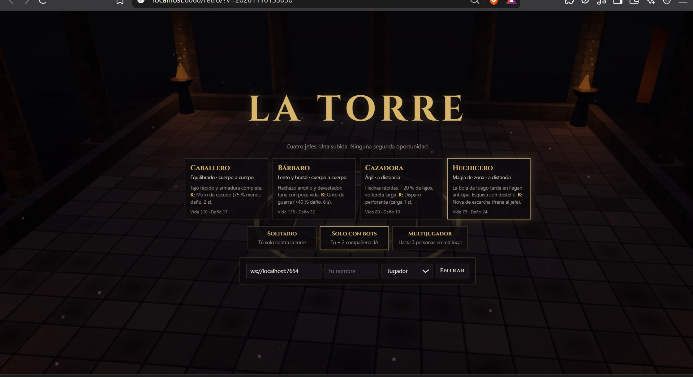
Figura 1. Menú del juego con las cuatro clases y los tres modos.
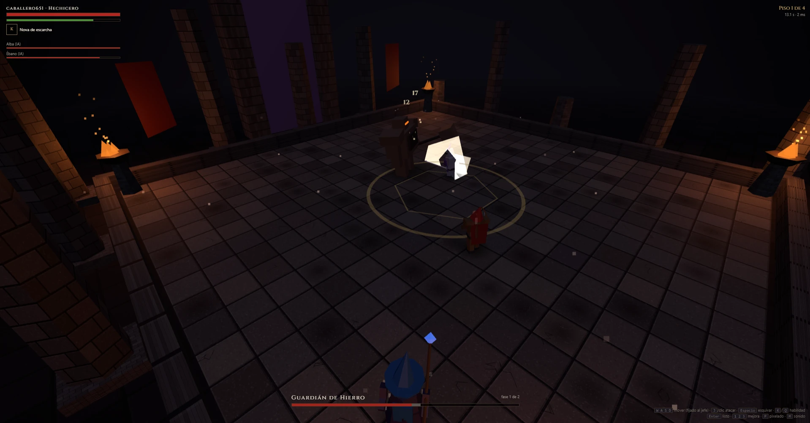
Figura 2. Combate contra el primer jefe en el modo con compañeros IA.
La tabla 1 resume cómo adapté cada componente del caso de estudio al juego.
Tabla 1. Adaptación de Nebula Arena a La Torre.
Componente
En La Torre
En Nebula Arena
Servidor de partida
Python 3.11 con WebSocket, 20 ticks por segundo y envío de estado a 10 Hz. Usa el SDK de Agones por REST.
Servidor UDP/WebSocket en EKS con Agones
Bots con IA
Bot entrenado con PPO contra el primer jefe y compañeros IA con una estrategia por clase.
Bots con aprendizaje por refuerzo
Espectadores
Un rol de espectador que recibe el estado de una partida en curso.
Transmisión de partidas
Funciones auxiliares
Tabla de líderes con Lambda y DynamoDB.
Login, tienda y tabla de líderes
Partida
Una subida a la torre (run) de 1 a 3 jugadores.
Partida de 5 contra 5
Arquitectura
La figura 3 muestra lo que quedó desplegado en AWS. Todo, menos el bucket donde Terraform guarda su estado, se crea y se borra
con Terraform.
Figura 3. Arquitectura de La Torre en AWS.
2. Práctica 3.1. Cómputo para IA
El material propone entrenar un agente en CartPole. Yo preferí que el agente aprendiera algo útil para el juego, así que programé
un entorno de Gymnasium donde un caballero pelea contra el Guardián de Hierro, el primer jefe, usando la misma lógica del servidor.
El agente observa 14 valores (distancias, vida, resistencia, estado del jefe, etc.), puede elegir entre 7 acciones y decide 10 veces
por segundo. Lo entrené con PPO de Stable-Baselines3 en mi laptop (Ryzen 5 7533HS de 6 núcleos, sin GPU NVIDIA). El entorno corre
a unos 21 779 pasos por segundo.
Tabla 2. Tiempo de entrenamiento.
Configuración
Pasos
Tiempo
Pasos/s
1 entorno
100 000
158.8 s
630
1 entorno (repetición)
100 000
160.4 s
623
8 entornos
1 000 000
928.6 s
1 077
GPU T4 en Colab
no se midió
Tabla 3. Victorias en 50 combates.
Jugador
Victorias
Acciones al azar
0 %
PPO con 100 000 pasos
20 %
PPO con 1 000 000 pasos
100 % (30.9 s promedio)
Bot de reglas sin errores
100 % (53.4 s promedio)
Con diez veces más experiencia el bot pasó de ganar 20 % a ganar todas las peleas, y además gana más rápido que el bot de reglas
porque aprendió a atacar en los momentos en que el jefe se recupera. Usar 8 entornos en paralelo subió la velocidad de 630 a 1 077
pasos por segundo en la misma computadora.
Para la inferencia medí cuánto tarda el modelo en tomar una decisión y calculé cuántas vCPU harían falta para 2 000 bots a 10 Hz,
o sea 20 000 decisiones por segundo, con 30 % de margen como indica el material.
Tabla 4. Latencia de inferencia y vCPU necesarias.
Forma de ejecutar el modelo
Latencia
Decisiones/s por núcleo
vCPU para 2 000 bots
PyTorch (predict de SB3)
0.429 ms
2 330
12
Misma red exportada a numpy
0.0155 ms
64 623
1
La versión en numpy toma exactamente las mismas decisiones (lo comprobé con 1 000 casos) y es unas 28 veces más rápida. Con una
red tan pequeña, el costo de pasar los datos por PyTorch pesa más que el cálculo en sí, así que en el servidor uso la versión numpy.
Los costos los consulté con la lista oficial de precios de AWS para us-east-2 (bajo demanda) y con el historial de precios Spot de
las últimas 24 horas.
Tabla 5. Costo estimado en AWS.
Uso
Instancia
USD/h bajo demanda
USD/h Spot
USD/mes 24/7
Inferencia con PyTorch
c7i.4xlarge (16 vCPU)
0.714
0.18 a 0.23
521.22
Inferencia con numpy
c7i.large (2 vCPU)
0.089
0.020 a 0.029
65.15
Entrenamiento en GPU
g4dn.xlarge (T4)
0.526
0.27 a 0.28
-
Servir los 2 000 bots cuesta 521 dólares al mes con PyTorch y 65 con numpy, y en la práctica la versión numpy cabe en los mismos
nodos donde corren las partidas. El entrenamiento conviene hacerlo en instancias Spot, que en la g4dn.xlarge cuestan casi la mitad, porque si AWS reclama la máquina se puede
retomar desde el último checkpoint, pero la inferencia tiene que ir bajo demanda porque corre junto a las partidas y no se puede
interrumpir. Si el entrenamiento de un millón de pasos tardara lo mismo en una c7i.2xlarge (USD 0.357/h) que en mi laptop, costaría
unos 9 centavos, aunque esto es una suposición. No alcancé a medir la GPU en Colab, así que esa comparación queda pendiente; por lo
que vi con numpy, espero que con una red tan chica la GPU no gane.
Figura 4. Entrenamiento de 100 000 pasos en CPU.Figura 5. Medición de victorias, latencia y vCPU.
3. Práctica 3.3. Contenedores y orquestación
Empaqueté el servidor en una imagen de Docker basada en Python 3.11 slim, que corre con un usuario sin privilegios y expone el
puerto 7654 para el juego y el 9100 para las métricas de Prometheus. La imagen pesa 46.1 MB. Dentro del contenedor, cada tick del
servidor tardó en promedio 0.50 ms (medido en 2 901 ticks), que es apenas el 1 % de los 50 ms que hay entre tick y tick.
El servidor usa el SDK de Agones: avisa que está listo al arrancar, manda señales de salud cada cierto tiempo, se marca como
asignado cuando entra el primer jugador y pide apagarse cuando termina la partida, de modo que cada GameServer dura exactamente una
partida. En el clúster creé la flota torre-fleet con 3 réplicas (cada una pide 250m de CPU y 128 MiB de memoria) y su FleetAutoscaler
con un buffer de 20 %.
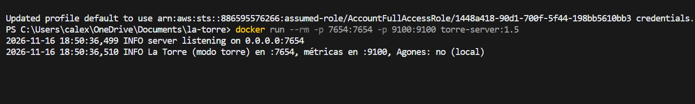
Figura 6. Servidor corriendo en un contenedor local.Figura 7. Métricas del juego en /metrics.
Figura 8. GameServers en Ready antes de la asignación.
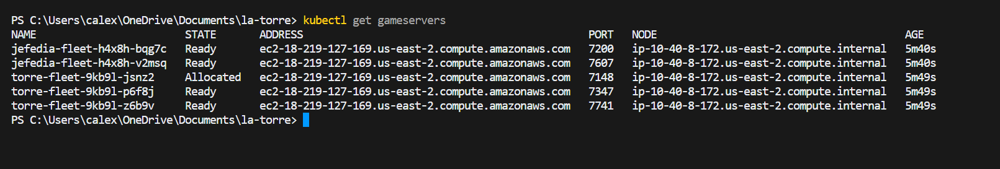
Figura 9. Después de la asignación, uno pasa a Allocated.
Después de la asignación la flota no creó otro servidor. Esto es correcto: con 3 servidores, el 20 % pide uno libre y había dos.
Para responder qué pasa si se borra un pod en estado Allocated, lo borré: Kubernetes detuvo los contenedores, Agones marcó el
GameServer como Unhealthy y la flota lo reemplazó por uno nuevo en unos 30 segundos. El servidor nuevo llega vacío; la partida que
estaba en curso se pierde, porque el estado vivía en la memoria del pod. Por eso un servidor de partida no debe correr en algo que se
pueda interrumpir.
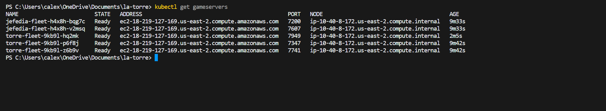
Figura 10. La flota repone el servidor borrado.
Figura 11. Nodos del clúster EKS.
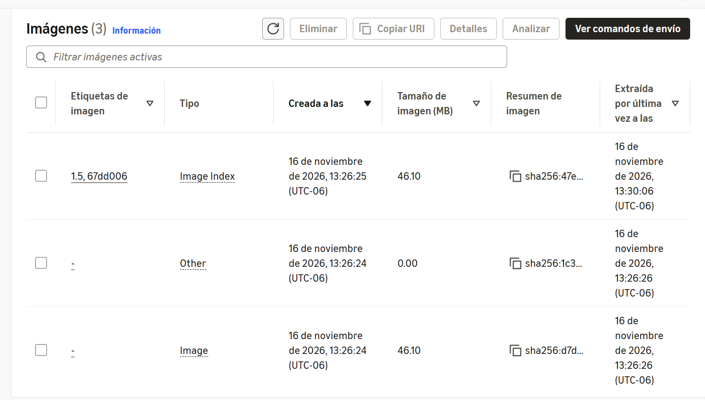
Figura 12. Imagen en ECR con la etiqueta del commit.
4. Práctica 3.2. CI/CD
El pipeline está en GitHub Actions y corre en cada push y pull request. Primero ejecuta las 122 pruebas del servidor y las 9 de la
Lambda, valida los archivos YAML de Kubernetes y revisa el formato y la validez del código de Terraform. Si todo pasa, construye la
imagen del servidor y le pone como etiqueta el SHA del commit, así cada versión queda ligada al código exacto con el que se hizo y
nunca se sobrescribe.
La idea era que el pipeline también subiera la imagen a ECR usando OIDC, para no guardar llaves de AWS en GitHub. Al aplicar
Terraform me encontré con que mi cuenta, que está en el plan gratuito, pertenece a una organización de AWS con una política (SCP)
que no permite crear proveedores OIDC. No quise usar llaves de acceso permanentes como alternativa, porque es justo lo que el material
recomienda evitar, así que la subida a ECR y la actualización de la flota las hice desde la terminal con los mismos pasos del
pipeline. El código ya está preparado para una cuenta sin esa restricción.
Para probar el despliegue, primero asigné un servidor para simular una partida en curso y después actualicé la flota con la imagen
del commit 4f65218. Cincuenta segundos después, el servidor asignado seguía con la versión anterior y los servidores libres ya tenían
la nueva (tabla 6). Agones solo reemplaza los servidores libres, así que una actualización no corta partidas.
Tabla 6. Estado de la flota después de la actualización.
GameServer
Estado
Imagen
torre-fleet-9kb9l-qrpwr
Allocated
torre-server:67dd006 (anterior)
torre-fleet-l4nlg-7ph6v
Ready
torre-server:4f65218 (nueva)
torre-fleet-l4nlg-bbfkn
Ready
torre-server:4f65218 (nueva)
Para hacer rollback basta con volver a aplicar la flota con la etiqueta de la versión buena, en este caso 67dd006. Como ECR guarda
las imágenes anteriores, no hay que reconstruir nada: Agones cambia los servidores libres a la versión anterior y las partidas en
curso terminan con la versión que tenían. La etiqueta anterior se puede encontrar con git log o en la lista de imágenes de ECR.
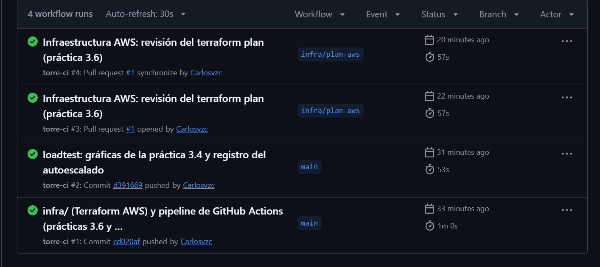
Figura 13. Pipeline en verde con sus dos trabajos.
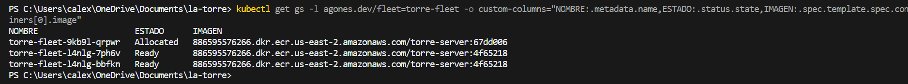
Figura 14. Flota actualizada sin cortar la partida asignada.
5. Práctica 3.4. Autoescalado y pruebas de carga
Para observar el clúster instalé kube-prometheus-stack, con un PodMonitor que lee las métricas de cada servidor cada 5 segundos y
un ServiceMonitor para las métricas de Agones, y armé un tablero en Grafana con el CCU, el tick p99, los servidores por estado, los
nodos, el egress y el uso de CPU. Locust lo corrí como un pod dentro del mismo clúster, para que la latencia de internet no se metiera
en las mediciones, con 1.5 vCPU reservadas para él. Cada jugador simulado pide un servidor, juega partidas completas con la estrategia
de los bots y mide su latencia con un ping por segundo.
Hice dos pruebas: una rampa de 18 minutos que subió de 0 a 120 jugadores en grupos de tres, y un pico de 3 minutos con 30 jugadores
y 30 espectadores. La tabla 7 resume los resultados.
Tabla 7. Resultados de las pruebas de carga.
Medición
Resultado
Latencia (RTT) en la rampa
73 537 pings sin fallos; p50 de 1 ms, p95 de 2 ms y p99 de 6 ms
Duración del tick p99
2.2 ms como máximo (la meta es menos de 25 ms)
Partidas completas en la rampa
172 (65 victorias y 107 derrotas)
Estado enviado a 30 espectadores
51 039 envíos, ninguno tardío, uno cada 100 ms
CPU por GameServer
17.7 milinúcleos en promedio (se reservaban 250)
Egress
119 kbps por jugador y 57 kbps por espectador
El autoescalado trabajó en sus dos capas. El FleetAutoscaler subió los GameServers de 5 a 54 conforme entraban jugadores, y el
Cluster Autoscaler subió los nodos de 4 a 8, que era el máximo que configuré, agregando uno a los 288, 366, 458 y 540 segundos. Desde
que apareció el primer pod pendiente (segundo 80) hasta que el primer nodo nuevo estuvo listo pasaron 208 segundos, unos tres minutos y
medio, que es el tiempo de reacción del escalado.
Con 8 nodos llegué a entre 35 y 39 servidores asignados, es decir, entre 105 y 117 jugadores, unos 13 a 15 jugadores por nodo
contando que esos nodos también tenían a Agones, Prometheus y Locust. A partir de ahí hubo hasta 10 pods pendientes y algunas
asignaciones no encontraron servidor libre. Lo que se agotó no fue el servidor del juego, que siguió con un tick de 2 ms, sino la CPU
reservada: con 250m por servidor solo caben unos 7 servidores en un nodo c7i-flex.large. Como la latencia nunca se acercó a la meta
de 80 ms, la capacidad la marcó la reserva de CPU y no la latencia.
Figura 15. Tablero de Grafana durante la rampa, con 112 jugadores y 8 nodos.
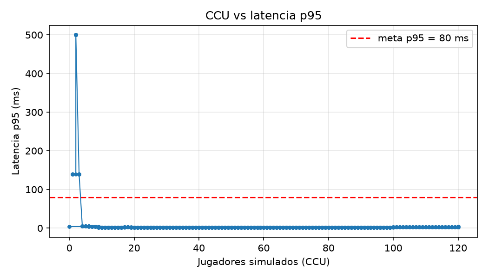
Figura 16. CCU contra latencia p95. El pico del inicio son las primeras asignaciones de servidor; después la latencia se mantiene entre 1 y 4 ms.Figura 17. Servidores y nodos durante la prueba.Figura 18. Errores en el pico: asignaciones que no encontraron servidor libre mientras la flota crecía.Figura 19. Cuatro nodos nuevos agregados por el Cluster Autoscaler.
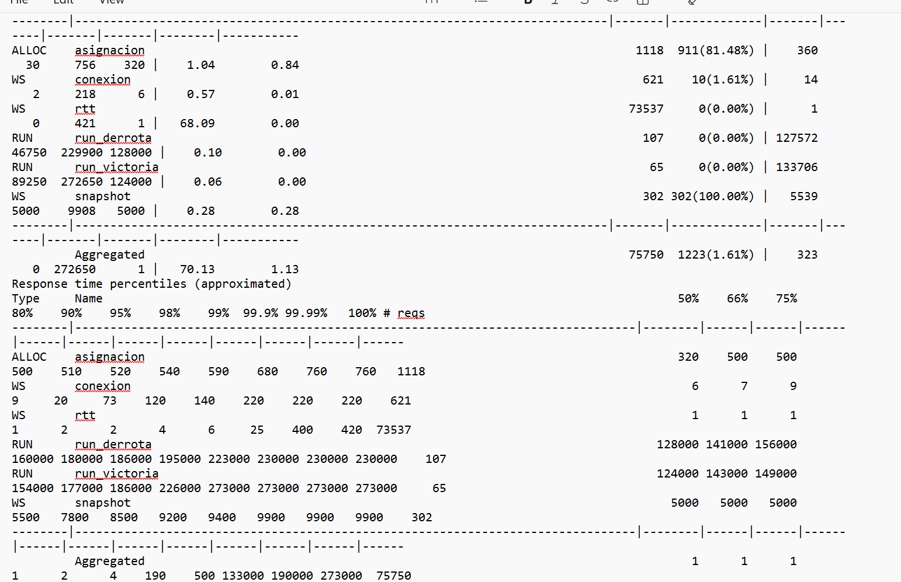
Figura 20. Resumen de Locust de la rampa.
El material también pide aplicar la fórmula de egress a los espectadores y extrapolar a 20 000 espectadores durante una hora
(GB/hora = CCV × kbps × 3600 / 8 000 000). Lo calculé con lo que medí, que es el estado del juego que reciben mis espectadores, y con
el video a 1080p (6 000 kbps) que propone el material, usando los precios de salida a internet de us-east-2 (tabla 8).
Tabla 8. Egress de 20 000 espectadores durante una hora.
Caso
kbps por espectador
Datos en una hora
Costo de la hora
Estado del juego (medido)
57
513 GB (0.51 TB)
26 a 46 USD
Video 1080p
6 000
54 000 GB (54 TB)
2 700 a 4 860 USD
El rango de costo sale de los precios por GB, que van de 0.09 dólares en los primeros 10 TB del mes a 0.05 después de 150 TB; si
esa hora fuera la primera del mes, con los tramos de AWS costaría unos 4 599 dólares. El video a 1080p genera unas 105 veces más datos
que mandar el estado del juego, por eso en un juego real los espectadores se atienden con una CDN y varias calidades de video, y no
desde los servidores de partida.
Con estos datos, la configuración que recomiendo es la de la tabla 9.
Tabla 9. Recomendación de configuración.
Parámetro
Usado
Recomendado
Razón
CPU reservada por GameServer
250m
50m
El consumo real fue de 17.7m; la reserva fue lo que llenó los nodos.
bufferSize
20 %
30 %, con minReplicas de al menos 10 en eventos
Con 20 % se acabaron los servidores libres en la rampa y en el pico, y un nodo nuevo tarda unos 3.5 minutos.
Tipo de máquina
c7i-flex.large
c7i-flex.large
La CPU sobra (tick de 2.2 ms). Con 50m el límite pasa a ser de 29 pods por nodo.
Mínimo de nodos
2
2, y escalar antes de un lanzamiento
Dos nodos bastan normalmente, pero el escalado no alcanza a cubrir un pico repentino.
Hubo cosas que no salieron perfectas y prefiero dejarlas anotadas. En la rampa, 302 veces un jugador simulado pasó más de 5
segundos sin recibir estado, casi siempre al terminar una partida, y no alcancé a confirmar la causa. El primer intento del pico con
espectadores no sirvió porque los espectadores quedaron en un proceso de Locust distinto al de los jugadores, así que lo repetí con 60
usuarios. Además, al correr Locust con varios procesos no se guarda el historial de la latencia por separado, por eso la figura 16 usa
la latencia agregada. Finalmente, la escala de la prueba la limitó el máximo de 8 nodos que puse para no pasarme del presupuesto.
6. Práctica 3.5. Serverless
La tabla de líderes la hice con una función Lambda en Python 3.12 (256 MB) expuesta con una Function URL pública y una tabla de
DynamoDB en modo bajo demanda, todo creado con Terraform. Cuando termina una partida, el servidor registra el resultado, y los clientes
consultan el top de cada modo de juego. Al probar la URL por primera vez respondía 403. Investigando encontré que una Function URL
pública necesita dos permisos en la función (InvokeFunctionUrl e InvokeFunction); la consola los agrega sola, pero desde Terraform
hay que declararlos.
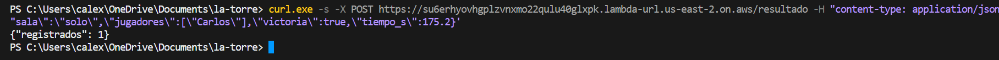
Figura 21. Registro de un resultado en la URL.Figura 22. Consulta del top.
La prueba de carga fue con Locust y 500 usuarios durante 5 minutos, con 80 % de consultas del top y 20 % de registros. Para las
escrituras usé un grupo fijo de 200 jugadores; si cada escritura creara un jugador nuevo, la tabla crecería sin parar y cada consulta
saldría más cara (calculé unos 2 dólares contra 35 centavos).
Tabla 10. Resultados de la prueba 80/20.
Operación
Peticiones
Rechazadas (429)
p50
p95
p99
Consultar el top (80 %)
106 666
80.2 %
71 ms
150 ms
360 ms
Registrar resultado (20 %)
26 703
80.3 %
71 ms
130 ms
350 ms
Lo que más llamó mi atención fue que Lambda nunca pasó de 10 instancias al mismo tiempo. Revisando la cuenta, ese es el límite de
concurrencia que AWS les da a las cuentas nuevas (lo normal es 1 000), así que Lambda atendió unas 85 peticiones por segundo y rechazó
el resto con error 429. Aprendí que lo de que serverless escala solo tiene un límite de cuenta y que antes de un lanzamiento habría que
pedir el aumento. Los arranques en frío fueron solo 10, uno por instancia, de unos 93 ms cada uno, así que no explican los tiempos
altos del final de la distribución; esos vienen de la saturación.
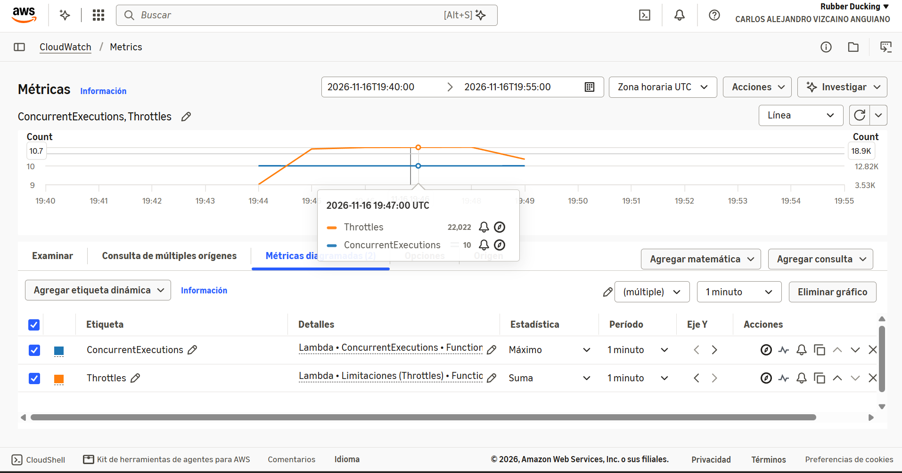
Figura 23. Concurrencia en 10 y rechazos por minuto en CloudWatch.
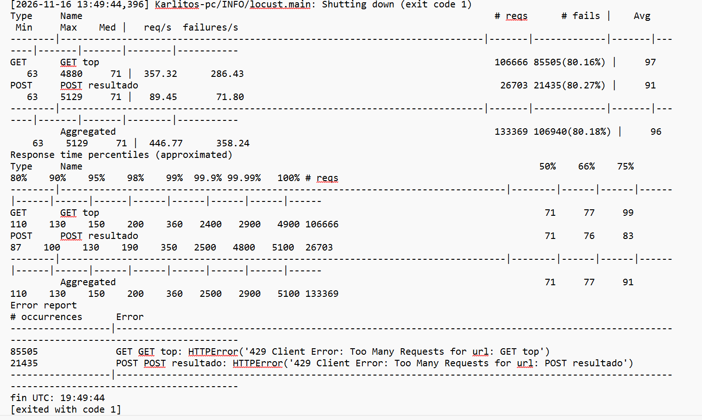
Figura 24. Resumen de Locust de la prueba 80/20.
Para comparar costos supuse un mes con un millón de peticiones (tabla 11). Con los precios oficiales, la opción serverless sale más
barata hasta unos 9 millones de peticiones al mes, y cuando nadie juega cuesta casi nada. El servidor de partida no puede ser
serverless porque guarda la partida en memoria y mantiene conexiones abiertas mucho tiempo.
Tabla 11. Costo mensual con un millón de peticiones.
Opción
USD/mes
Lambda y DynamoDB
1.33
VM t3.micro encendida todo el mes (con IP pública y disco de 8 GB)
11.88
VM t3.small encendida todo el mes
19.47
7. Práctica 3.6. Infraestructura como código
La carpeta infra del repositorio describe toda la infraestructura: la red, el clúster EKS con su grupo de nodos, Agones y el
Cluster Autoscaler instalados con Helm desde Terraform, ECR, la Lambda con su URL, DynamoDB, los roles y la alerta de presupuesto de
10 dólares. El estado se guarda en un bucket de S3 con bloqueo, y antes de aplicar revisé el plan y su costo en un pull request.
Al revisar el plan y al aplicarlo fueron saliendo varios problemas que tuve que corregir en el código (tabla 12). Varios tenían que ver con el costo o con
recursos que podían quedarse cobrando después de destruir todo.
Tabla 12. Problemas encontrados y cómo los resolví.
Problema
Solución
La versión de EKS por defecto (1.32) habría entrado en soporte extendido, que cuesta 0.50 dólares más por hora.
Usar EKS 1.35, que Agones 1.62 soporta.
El plan gratuito no permitió lanzar instancias c7i.large.
Cambiar a c7i-flex.large, que sí es elegible y cuesta casi lo mismo.
La política de la organización no deja crear proveedores OIDC.
Dar los permisos del autoescalador al rol de los nodos, limitados al clúster, y dejar opcional el OIDC de GitHub.
Agones creaba dos balanceadores de carga que cobran y que el destroy no borraría.
Configurar el allocator sin balanceador y desactivar el servicio de ping.
No se podía crear la flota porque el plano de control no llegaba al webhook de Agones.
Abrir el puerto 8081 solo desde el plano de control.
La alerta de presupuesto descontaba los créditos, así que nunca avisaría.
Medir el gasto sin descontar créditos.
El destroy se quedó esperando la desinstalación de Agones.
Desinstalar Agones antes del destroy; quedó documentado en el README de infra.
Ya con los arreglos, terraform plan respondió que no había cambios, lo que confirma que no había diferencias entre el código y lo que
existía en AWS. Al terminar, el destroy borró todo (en la segunda corrida terminó con 38 recursos destruidos, porque la primera ya
había borrado el resto) y un script que hice para revisar los servicios confirmó que no quedó ningún recurso huérfano. Lo único que se
conserva es el bucket del estado, que cuesta centavos.
Figura 25. Pull request con el plan y su costo (calculado aún con c7i.large).
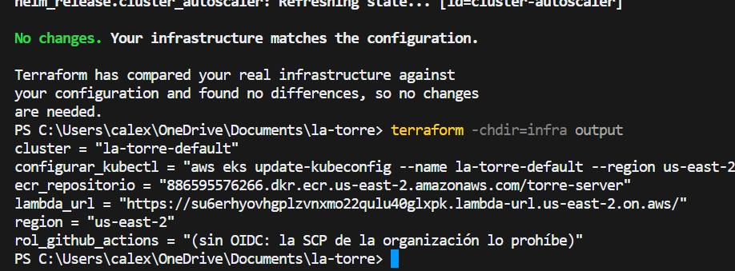
Figura 26. Plan sin cambios y salidas de Terraform.Figura 27. Clúster activo en la consola de AWS.
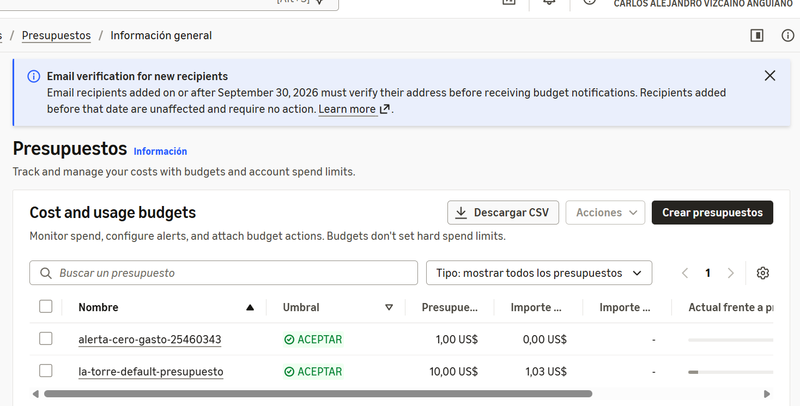
Figura 28. Alerta de presupuesto de 10 dólares.
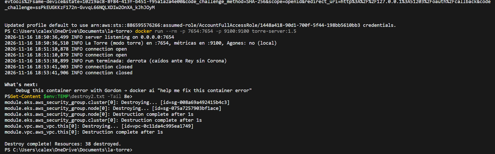
Figura 29. Destroy terminado.
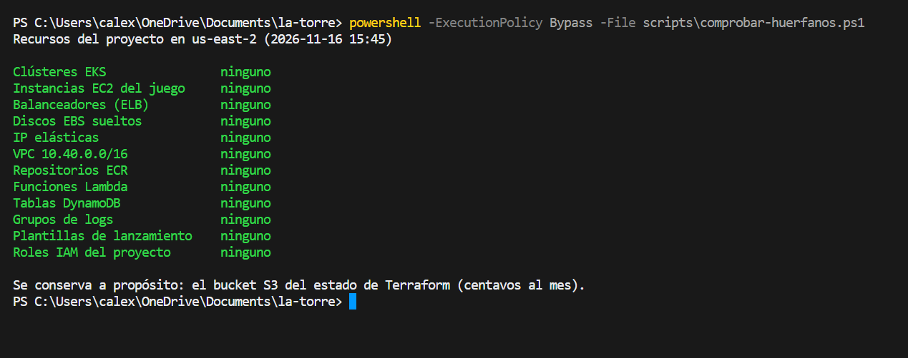
Figura 30. Revisión sin recursos huérfanos.
8. Costos y capacidad
Con los precios oficiales de us-east-2 calculé el costo por hora y por jugador de lo que medí, y lo extrapolé a 20 000 jugadores
(tabla 13). La extrapolación supone que el consumo por servidor y por jugador crece de forma lineal. Para 20 000 jugadores harían
falta 6 667 servidores; con la reserva actual de 250m serían unos 953 nodos, y con la reserva ajustada a 50m bajarían a unos 267. El
egress sería de unos 2.4 Gbps, alrededor de 1 071 GB por hora, que cuestan entre 0.05 y 0.09 dólares por GB según el volumen.
Tabla 13. Costo por hora y por jugador.
Escenario
Cómputo USD/h
Egress USD/h
USD por jugador-hora
Medido: 120 jugadores en 8 nodos
0.82
0.58
0.0117
20 000 jugadores con la reserva actual
86
54 a 96
0.007 a 0.009
20 000 jugadores con la reserva ajustada
24
54 a 96
0.004 a 0.006
Una vez ajustada la reserva de CPU, el egress pasa a ser el gasto más grande, por lo que la siguiente mejora sería mandar solo los
cambios del estado en lugar del estado completo y comprimirlo. El gasto estimado del día fue de entre 1.5 y 2.5 dólares, que salieron
de los créditos de la cuenta; el monto real se puede confirmar en Cost Explorer un día después.
9. Conclusiones
Las seis prácticas quedaron hechas sobre el juego propio y en AWS, con mediciones reales. Lo que más me sirvió fue ver que los
límites aparecieron donde no los esperaba: el servidor del juego aguantó sin problema (tick de 2 ms y latencia de 6 ms en el p99),
pero la capacidad la frenó la CPU reservada en Kubernetes, la tabla de líderes la frenó el límite de 10 instancias de la cuenta y
varias decisiones de diseño las condicionaron las restricciones del plan gratuito. También me quedó claro que hay que revisar qué
recursos crea cada herramienta por su cuenta, como los balanceadores de Agones, porque son los que se quedan cobrando si no se
borran.
Mis recomendaciones son reducir la CPU reservada a 50m por servidor, subir el buffer al 30 % y escalar antes de un lanzamiento
porque cada nodo tarda unos tres minutos y medio, pedir con tiempo el aumento de las cuotas de Lambda y de EC2, reducir el tamaño del
estado que se envía, y servir los bots con la versión numpy y entrenarlos en Spot.
Para la entrega del proyecto integrador, el 19 de noviembre, me falta repetir la prueba con 1 000 jugadores y 500 espectadores
(hoy llegué a 120 y 30 por el máximo de 8 nodos), medir el entrenamiento en GPU y averiguar la causa de los casos en que un jugador
simulado se quedó sin recibir estado.
10. Referencias
Material de estudio de la Unidad 3: Infraestructura y despliegue de videojuegos en la nube. Cómputo en la Nube, TecNM Campus Colima, 2026.
Documentación de Agones (agones.dev): Fleet, FleetAutoscaler, GameServerAllocation y SDK.
Documentación de Amazon EKS, AWS Lambda, Amazon DynamoDB y AWS Budgets (docs.aws.amazon.com).
AWS Price List API, precios de us-east-2 consultados el 16 de noviembre de 2026.
Documentación de Terraform y del módulo terraform-aws-modules/eks (registry.terraform.io).
Documentación de Locust (docs.locust.io) y de Stable-Baselines3 (stable-baselines3.readthedocs.io).